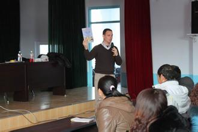

为什么选择好的英语外教那么重要呢？

生活在二十一世纪的我们伴随着全球化越来越明显的趋势，跟随着科技越来越先进的步伐，国家与国家之间的联系日益密切，地球村的人们交往也是越来越频繁，科技和交通技术的迅速发展让距离不再是问题，于是，英语作为世界通用的语言越来越重要。
Life in the 21st century, we, together with the trend of globalization is more and more obvious, follow the pace of science and technology is more and more advanced, the increasingly close links between country and country, global village of exchanges between people is becoming more and more frequent, the rapid development of science and technology and transportation technology to distance is no longer a problem. Thus, English as a universal language is more and more important.
从小学三年级到高中毕业我们学了十年英语，可是我们真的学好英语了吗？我们自以为流利的英语能说出口了吗？可能大家都不知道外国人称中国人的发音为中国式发音，这真的有一点戏谑的意味。2015年高考英语从山东卷改为全国卷同时增加听力考察，这对于我们山东这些英语口语并不好的考生来说可谓是压力倍增，这是我们的一大缺陷。
We have learned English for ten years from grade three to high school, but we really learn English well? Do we think we can speak English fluently? May we all do not know foreigners call Chinese pronunciation for China pronunciation, it's really a little joking. 2015 college entrance examination in English from Shandong to the whole country to increase the volume of listening, which is not good for our oral English candidates in Shandong, it can be described as a pressure multiplier, which is one of our major defects.
越是这样越是图线了学好英语发音的重要性，奈何，中国人受母语的影响难免说不了一口标准流利有味儿的英语，越是这样就越显示出【英语外教】的重要性，大多数人并不了解英语外教，所以我们今天就来谈【英语外教】！
The more so the more line graph of the importance of learning English pronunciation well, regrettably, the Chinese people by the influence of the mother tongue it is inevitable that not a standard fluent taste English, more so more show the importance of English teachers, most people do not understand English teachers, so today we will talk about [English teachers.
何为英语外教？
What is an English teacher?
外，顾名思义就是外来的不是本地的本国的；教，就是教师。所以英语【英语外教】就是外来的教外国语种的老师，但是，并不是所有“金发碧眼”的外国人能都成为【英语外教】。我国早有规定，外籍教师受聘于中国境内工作，必须持有《外国专家来华工作许可证》和《外国专家证》，应具有大学学士以上学位和2年以上相关工作经历。所以不管是从人品还是学术造诣上都是值得信任的。
Outside, just as the name suggests is outside of the local is not local; teaching, is a teacher. So English [English teacher] is alien to teach foreign language teacher. However, not all of the "blond" foreigners to become English teachers. Our country already provides that foreign teachers employed to work within the territory of China must hold the permit for foreign experts working in China and the foreign expert certificate ", should have a bachelor's degree and 2 years or above related working experience. So whether it is from the character or academic attainments are worthy of trust.
我们没办法说一口流利的牛津英语还有一个原因就是因为我们的生活环境，在外国长大的华人或者在外国生活好长时间的华人同样也可以说一口人人艳羡的标准英语。【英语外教】对文化和生活习惯有比较深入的了解，对一些具体发音的把握比较灵活，而且英语英语外教能够给学习者提供一个真实的语言环境，并将他们的习俗文化渗透到学习过程之中，【英语外教】比国内教师更善于调动学习者的学习兴趣，使学生们在与【英语外教】的交流中不断练习自己的语言反应能力，从而能够说一口地道的口语。
We can't say Oxford English fluently. There is a reason is because of our living environment, grew up in the foreign Chinese or Chinese in the life in a foreign country for a long time can also said a mouthful of the envy of everyone standard English. English teachers have more in-depth understanding of culture and living habits, the grasp of some specific pronunciation is more flexible, and English teachers to give learners provides a real language environment, and the customs and cultures of their penetration into the learning process, English teacher] than domestic teachers are better at Arousing Learners' interest in learning, so that students in English teacher exchanges and continue to practice their language ability to respond to speak idiomatic English.
由于【英语外教】具有充分的语言能力优势与文化背景优势，对于学习者语言能力的提升有非常大的帮助，所以，学生们在英语英语外教老师的陪伴下，通过和外国老师的交流，孩子们的表达能力也会随着听得次数和内容的不断丰富而提高。因为是不断交流的，和英语英语外教对话接触是非常必要的所以【英语外教】的另一个优势就是具有很强的实用性，有效的摆脱了“哑巴英语”和“中式英语”的困扰。
As English teachers] with sufficient linguistic competence superiority and the cultural background, language ability for learning have very big help, so the students in the company of English foreign teacher, exchanges with foreign teachers, expression of children can force with heard the times and content constantly enrich and improve. Because of the continuous exchanges and foreign teachers of English dialogue contact is very necessary so another advantage of English teachers is very strong practicability, effectively get rid of the "dumb English" and "Chinglish" distress.
所以根据以上的解答我们应该都知道在英语的学习中， 有一个好的外教是一件很重要的事情。而选择好的【英语外教】是我们重点要做的，切不盲目选择。
Therefore, according to the above answers, we should all know that in the study of English, there is a good teacher is a very important thing. And choose a good English teacher is our focus to do, do not blindly choose.